Physics Homework 10 Magnetic forces · Worked solutions
All 9 assigned questions. Setup, substitution and final answers.
27.1 27.4 27.7 27.10 27.19 27.21 27.24 27.27 27.29 Print / Save PDF Question 127.1 · Magnetic force on a negative charge q = −1.24 × 10⁻⁸ C; v = (4.19 × 10⁴ i − 3.85 × 10⁴ j) m/s. Find F for (a) B = 1.40 i T and (b) B = 1.40 k T.
Original question 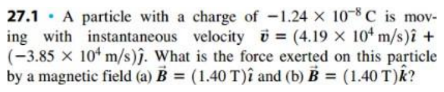
Open the original D2L handout Compute v × B first, then multiply by the negative charge.
Part (a): field along x v × B = − v y B x k = − ( − 3.85 × 10 4 ) ( 1.40 ) k = 5.390 × 10 4 k F = q ( v × B ) = ( − 1.24 × 10 − 8 ) ( 5.390 × 10 4 ) k F = − 6.68 × 10 − 4 k N \begin{gathered}\mathbf v\times\mathbf B=-v_yB_x\mathbf k\\=-(-3.85\times10^4)(1.40)\mathbf k=5.390\times10^4\mathbf k\\\mathbf F=q(\mathbf v\times\mathbf B)=(-1.24\times10^{-8})(5.390\times10^4)\mathbf k\\\mathbf F=-6.68\times10^{-4}\mathbf k\ \mathrm N\end{gathered} v × B = − v y B x k = − ( − 3.85 × 1 0 4 ) ( 1.40 ) k = 5.390 × 1 0 4 k F = q ( v × B ) = ( − 1.24 × 1 0 − 8 ) ( 5.390 × 1 0 4 ) k F = − 6.68 × 1 0 − 4 k N Part (b): field along z v × B = B z ( v y i − v x j ) = 1.40 [ − 3.85 × 10 4 i − 4.19 × 10 4 j ] F = ( − 1.24 × 10 − 8 ) ( − 5.390 × 10 4 i − 5.866 × 10 4 j ) F = ( 6.68 i + 7.27 j ) × 10 − 4 N \begin{gathered}\mathbf v\times\mathbf B=B_z(v_y\mathbf i-v_x\mathbf j)\\=1.40[-3.85\times10^4\mathbf i-4.19\times10^4\mathbf j]\\\mathbf F=(-1.24\times10^{-8})(-5.390\times10^4\mathbf i-5.866\times10^4\mathbf j)\\\mathbf F=(6.68\mathbf i+7.27\mathbf j)\times10^{-4}\ \mathrm N\end{gathered} v × B = B z ( v y i − v x j ) = 1.40 [ − 3.85 × 1 0 4 i − 4.19 × 1 0 4 j ] F = ( − 1.24 × 1 0 − 8 ) ( − 5.390 × 1 0 4 i − 5.866 × 1 0 4 j ) F = ( 6.68 i + 7.27 j ) × 1 0 − 4 N Final answer (a) −6.68 × 10⁻⁴ k N; (b) (6.68 i + 7.27 j) × 10⁻⁴ N.
Each result is perpendicular to both velocity and field. A negative charge reverses the right-hand-rule direction.
Question 227.4 · Magnetic acceleration m = 1.81 × 10⁻³ kg; q = +1.22 × 10⁻⁸ C; v = 3.00 × 10⁴ j m/s; B = (1.63 i + 0.980 j) T. Find acceleration magnitude and direction.
Original question 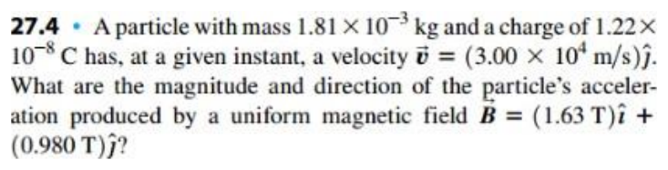
Open the original D2L handout The field component parallel to v produces no force.
Take the cross product v = v y j , B = B x i + B y j v × B = − v y B x k a = q m ( v × B ) \begin{gathered}\mathbf v=v_y\mathbf j,\quad\mathbf B=B_x\mathbf i+B_y\mathbf j\\\mathbf v\times\mathbf B=-v_yB_x\mathbf k\\\mathbf a=\frac q m(\mathbf v\times\mathbf B)\end{gathered} v = v y j , B = B x i + B y j v × B = − v y B x k a = m q ( v × B ) Substitute the values a = − ( 1.22 × 10 − 8 ) ( 3.00 × 10 4 ) ( 1.63 ) 1.81 × 10 − 3 k a = − 0.330 k m / s 2 \begin{gathered}\mathbf a=-\frac{(1.22\times10^{-8})(3.00\times10^4)(1.63)}{1.81\times10^{-3}}\mathbf k\\\mathbf a=-0.330\mathbf k\ \mathrm{m/s^2}\end{gathered} a = − 1.81 × 1 0 − 3 ( 1.22 × 1 0 − 8 ) ( 3.00 × 1 0 4 ) ( 1.63 ) k a = − 0.330 k m/ s 2 Final answer 0.330 m/s² along −k.
j × i = −k, so acceleration is into the xy-plane for positive q.
Question 327.7 · Recover magnetic-field components q = +7.80 µC; v = −3.80 × 10³ j m/s; F = (7.60 × 10⁻³ i − 5.20 × 10⁻³ k) N. Find determined B components, identify any undetermined component, and calculate B·F and their angle.
Original question 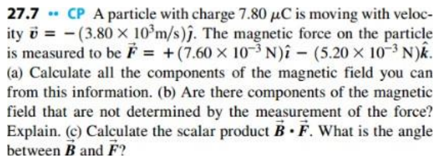
Open the original D2L handout A force measurement cannot reveal the component of B parallel to v.
Find the determined components F = q v y ( B z i − B x k ) B z = F x q v y = 7.60 × 10 − 3 ( 7.80 × 10 − 6 ) ( − 3.80 × 10 3 ) = − 0.256 T B x = − F z q v y = 5.20 × 10 − 3 ( 7.80 × 10 − 6 ) ( − 3.80 × 10 3 ) = − 0.175 T \begin{gathered}\mathbf F=qv_y(B_z\mathbf i-B_x\mathbf k)\\B_z=\frac{F_x}{qv_y}=\frac{7.60\times10^{-3}}{(7.80\times10^{-6})(-3.80\times10^3)}=-0.256\ \mathrm T\\B_x=\frac{-F_z}{qv_y}=\frac{5.20\times10^{-3}}{(7.80\times10^{-6})(-3.80\times10^3)}=-0.175\ \mathrm T\end{gathered} F = q v y ( B z i − B x k ) B z = q v y F x = ( 7.80 × 1 0 − 6 ) ( − 3.80 × 1 0 3 ) 7.60 × 1 0 − 3 = − 0.256 T B x = q v y − F z = ( 7.80 × 1 0 − 6 ) ( − 3.80 × 1 0 3 ) 5.20 × 1 0 − 3 = − 0.175 T Find the dot product B ⋅ F = B x F x + B z F z = − F z F x + F x F z q v y = 0 cos θ = B ⋅ F B F = 0 ⇒ θ = 90 ∘ \begin{gathered}\mathbf B\cdot\mathbf F=B_xF_x+B_zF_z\\=\frac{-F_zF_x+F_xF_z}{qv_y}=0\\\cos\theta=\frac{\mathbf B\cdot\mathbf F}{BF}=0\quad\Rightarrow\quad\theta=90^\circ\end{gathered} B ⋅ F = B x F x + B z F z = q v y − F z F x + F x F z = 0 cos θ = B F B ⋅ F = 0 ⇒ θ = 9 0 ∘ The force does not determine Bᵧ: a field parallel to the velocity adds no magnetic force.
Final answer Bx = −0.175 T; Bz = −0.256 T; By undetermined; B·F = 0, angle 90°.
B and F are perpendicular (90°) regardless of By. Do not assume By = 0 just because it is undetermined.
Question 427.10 · Magnetic flux through an xy square Square side 0.0340 m lies in the xy-plane; B = (0.200 i + 0.300 j − 0.500 k) T. Find magnetic-flux magnitude.
Original question 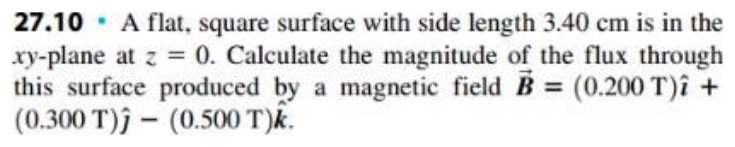
Open the original D2L handout Only the normal component Bz crosses the square.
Use only the normal field component A = s 2 k , Φ = B ⋅ A = B z s 2 Φ = ( − 0.500 ) ( 0.0340 ) 2 = − 5.78 × 10 − 4 W b ∣ Φ ∣ = 5.78 × 10 − 4 W b \begin{gathered}\mathbf A=s^2\mathbf k,\quad\Phi=\mathbf B\cdot\mathbf A=B_zs^2\\\Phi=(-0.500)(0.0340)^2=-5.78\times10^{-4}\ \mathrm{Wb}\\|\Phi|=5.78\times10^{-4}\ \mathrm{Wb}\end{gathered} A = s 2 k , Φ = B ⋅ A = B z s 2 Φ = ( − 0.500 ) ( 0.0340 ) 2 = − 5.78 × 1 0 − 4 Wb ∣Φ∣ = 5.78 × 1 0 − 4 Wb Final answer Magnitude 5.78 × 10⁻⁴ Wb.
The x and y components run along the surface and contribute no flux.
Question 527.19 · Cosmic-ray semicircle Particles have |q| = 3e, m = 12mₚ and enter downward into B = 0.250 T out of the page. They curve to the right through a semicircle of diameter 0.950 m. Find speed and charge sign, assess gravity, and compare entry/exit speeds.
Original question 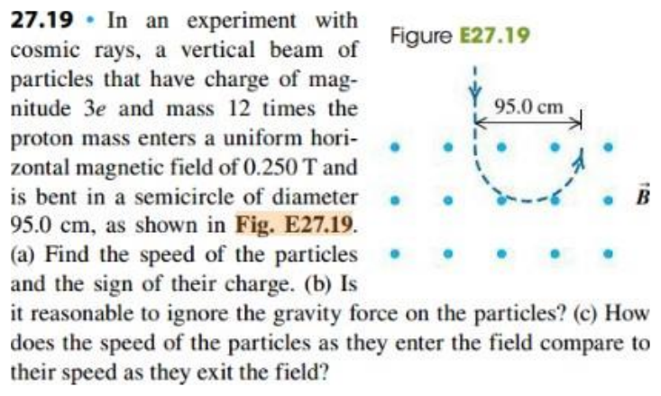
Open the original D2L handout 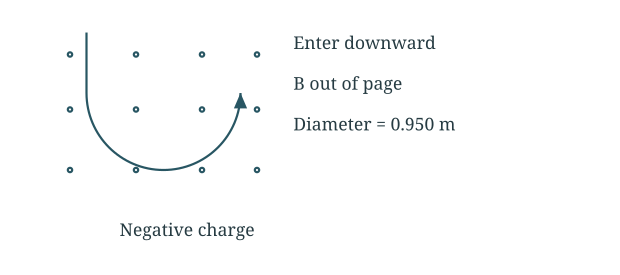
The radius is half the diameter; magnetic force supplies centripetal acceleration.
Find the speed r = 0.950 / 2 = 0.475 m ∣ q ∣ v B = m v 2 r ⇒ v = ∣ q ∣ B r m v = 3 ( 1.602 × 10 − 19 ) ( 0.250 ) ( 0.475 ) 12 ( 1.673 × 10 − 27 ) v = 2.84 × 10 6 m / s \begin{gathered}r=0.950/2=0.475\ \mathrm m\\|q|vB=\frac{mv^2}{r}\quad\Rightarrow\quad v=\frac{|q|Br}{m}\\v=\frac{3(1.602\times10^{-19})(0.250)(0.475)}{12(1.673\times10^{-27})}\\v=2.84\times10^6\ \mathrm{m/s}\end{gathered} r = 0.950/2 = 0.475 m ∣ q ∣ v B = r m v 2 ⇒ v = m ∣ q ∣ B r v = 12 ( 1.673 × 1 0 − 27 ) 3 ( 1.602 × 1 0 − 19 ) ( 0.250 ) ( 0.475 ) v = 2.84 × 1 0 6 m/s Check gravity and speed change F B m g = m v 2 / r m g = v 2 r g = ( 2.843 × 10 6 ) 2 ( 0.475 ) ( 9.80 ) = 1.74 × 10 12 F B ⋅ v = 0 ⇒ v e x i t = v e n t r y \begin{gathered}\frac{F_B}{mg}=\frac{mv^2/r}{mg}=\frac{v^2}{rg}\\=\frac{(2.843\times10^6)^2}{(0.475)(9.80)}=1.74\times10^{12}\\\mathbf F_B\cdot\mathbf v=0\quad\Rightarrow\quad v_{exit}=v_{entry}\end{gathered} m g F B = m g m v 2 / r = r g v 2 = ( 0.475 ) ( 9.80 ) ( 2.843 × 1 0 6 ) 2 = 1.74 × 1 0 12 F B ⋅ v = 0 ⇒ v e x i t = v e n t r y With velocity downward and B out of the page, positive charge would bend left. The shown path bends right, so the charge is negative.
Final answer 2.84 × 10⁶ m/s; negative charge; negligible gravity; unchanged speed.
Gravity is negligible. Magnetic force does no work, so entry and exit speeds are equal.
Question 627.21 · Deuteron orbit Deuteron mass 3.34 × 10⁻²⁷ kg and charge +e; orbit radius 6.96 mm in B = 2.50 T. Find speed, half-orbit time, and accelerating potential magnitude from rest.
Original question 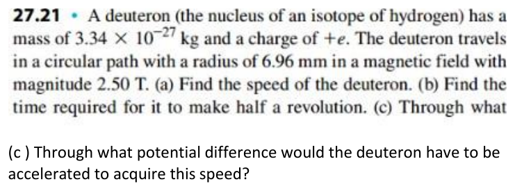
Open the original D2L handout Combine circular motion with kinetic energy gained from voltage.
Find speed v = q B r m = ( 1.602 × 10 − 19 ) ( 2.50 ) ( 6.96 × 10 − 3 ) 3.34 × 10 − 27 v = 8.35 × 10 5 m / s \begin{gathered}v=\frac{qBr}{m}=\frac{(1.602\times10^{-19})(2.50)(6.96\times10^{-3})}{3.34\times10^{-27}}\\v=8.35\times10^5\ \mathrm{m/s}\end{gathered} v = m q B r = 3.34 × 1 0 − 27 ( 1.602 × 1 0 − 19 ) ( 2.50 ) ( 6.96 × 1 0 − 3 ) v = 8.35 × 1 0 5 m/s Find half-orbit time t 1 / 2 = π r v = π m q B = π ( 3.34 × 10 − 27 ) ( 1.602 × 10 − 19 ) ( 2.50 ) = 2.62 × 10 − 8 s \begin{gathered}t_{1/2}=\frac{\pi r}{v}=\frac{\pi m}{qB}\\=\frac{\pi(3.34\times10^{-27})}{(1.602\times10^{-19})(2.50)}=2.62\times10^{-8}\ \mathrm s\end{gathered} t 1/2 = v π r = q B π m = ( 1.602 × 1 0 − 19 ) ( 2.50 ) π ( 3.34 × 1 0 − 27 ) = 2.62 × 1 0 − 8 s Find the accelerating voltage q ∣ Δ V ∣ = 1 2 m v 2 ∣ Δ V ∣ = ( 3.34 × 10 − 27 ) ( 8.346 × 10 5 ) 2 2 ( 1.602 × 10 − 19 ) ∣ Δ V ∣ = 7.26 × 10 3 V \begin{gathered}q|\Delta V|=\frac12mv^2\\|\Delta V|=\frac{(3.34\times10^{-27})(8.346\times10^5)^2}{2(1.602\times10^{-19})}\\|\Delta V|=7.26\times10^3\ \mathrm V\end{gathered} q ∣Δ V ∣ = 2 1 m v 2 ∣Δ V ∣ = 2 ( 1.602 × 1 0 − 19 ) ( 3.34 × 1 0 − 27 ) ( 8.346 × 1 0 5 ) 2 ∣Δ V ∣ = 7.26 × 1 0 3 V Final answer 8.35 × 10⁵ m/s; 26.2 ns; 7.26 kV drop.
The positive deuteron must move through a potential drop of 7.26 kV to gain this energy.
Question 727.24 · Quarter-circle proton path Protons at 1.20 km/s turn 90° while travelling arc length 1.18 cm in a perpendicular magnetic field. Find magnetic-field magnitude.
Original question 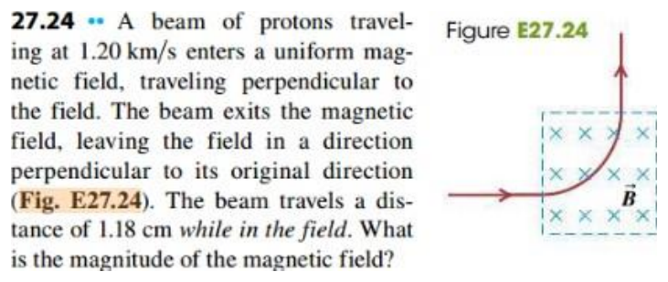
Open the original D2L handout 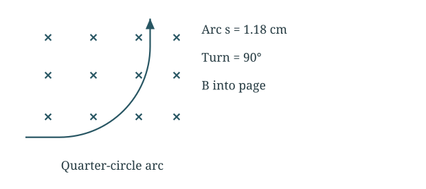
The given distance is an arc length, not a radius.
Convert arc length to radius s = 0.0118 m = π 2 r r = 2 s π = 2 ( 0.0118 ) π = 7.512 × 10 − 3 m \begin{gathered}s=0.0118\ \mathrm m=\frac\pi2r\\r=\frac{2s}\pi=\frac{2(0.0118)}\pi=7.512\times10^{-3}\ \mathrm m\end{gathered} s = 0.0118 m = 2 π r r = π 2 s = π 2 ( 0.0118 ) = 7.512 × 1 0 − 3 m Find the field B = m p v e r = ( 1.673 × 10 − 27 ) ( 1.20 × 10 3 ) ( 1.602 × 10 − 19 ) ( 7.512 × 10 − 3 ) B = 1.67 × 10 − 3 T \begin{gathered}B=\frac{m_pv}{er}=\frac{(1.673\times10^{-27})(1.20\times10^3)}{(1.602\times10^{-19})(7.512\times10^{-3})}\\B=1.67\times10^{-3}\ \mathrm T\end{gathered} B = er m p v = ( 1.602 × 1 0 − 19 ) ( 7.512 × 1 0 − 3 ) ( 1.673 × 1 0 − 27 ) ( 1.20 × 1 0 3 ) B = 1.67 × 1 0 − 3 T For a proton entering rightward and turning upward, B points into the page.
Question 827.27 · Crossed-field selector v = +5.85 × 10³ j m/s; B = −1.35 k T. Charges are (a) +0.640 nC and (b) −0.320 nC. Find E needed for undeflected motion in each case.
Original question 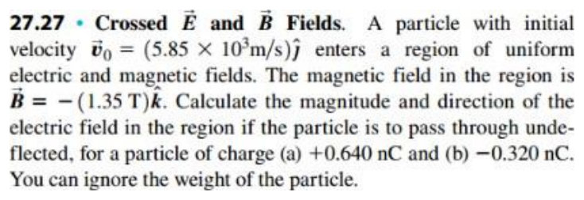
Open the original D2L handout 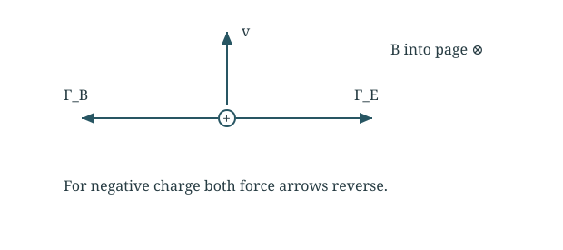
Zero net force requires E = −v × B for either nonzero charge.
Set the net force to zero q E + q v × B = 0 E = − v × B \begin{gathered}q\mathbf E+q\mathbf v\times\mathbf B=0\\\mathbf E=-\mathbf v\times\mathbf B\end{gathered} q E + q v × B = 0 E = − v × B Substitute the velocity and field v × B = ( 5.85 × 10 3 j ) × ( − 1.35 k ) = − 7.8975 × 10 3 i E = + 7.90 × 10 3 i N / C \begin{gathered}\mathbf v\times\mathbf B=(5.85\times10^3\mathbf j)\times(-1.35\mathbf k)\\=-7.8975\times10^3\mathbf i\\\mathbf E=+7.90\times10^3\mathbf i\ \mathrm{N/C}\end{gathered} v × B = ( 5.85 × 1 0 3 j ) × ( − 1.35 k ) = − 7.8975 × 1 0 3 i E = + 7.90 × 1 0 3 i N/C Final answer Both require E = +7.90 × 10³ i N/C.
Both forces reverse with charge sign, leaving the same cancellation condition.
Question 927.29 · Alpha-particle velocity selector Alpha q = +2e, m = 6.64 × 10⁻²⁷ kg accelerates from rest through 1.75 kV. It enters rightward between plates separated 8.20 mm with 150 V across them; lower plate positive. Find the magnetic field for no deflection.
Original question 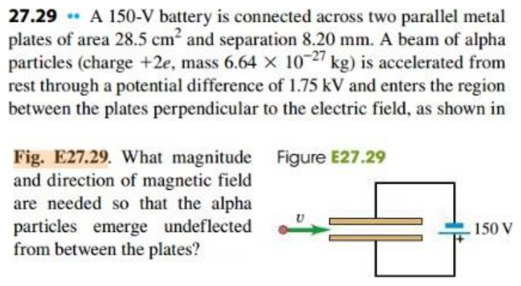
Open the original D2L handout 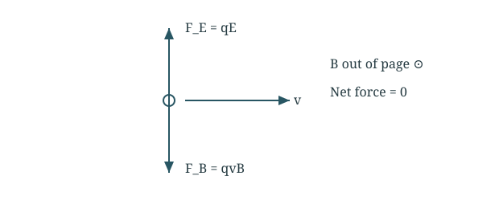
Find speed from accelerating voltage, then cancel electric and magnetic forces.
Find the alpha-particle speed 1 2 m v 2 = q V a c c v = 2 q V a c c m = 2 ( 2 ) ( 1.602 × 10 − 19 ) ( 1750 ) 6.64 × 10 − 27 v = 4.11 × 10 5 m / s \begin{gathered}\frac12mv^2=qV_{acc}\\v=\sqrt{\frac{2qV_{acc}}m}=\sqrt{\frac{2(2)(1.602\times10^{-19})(1750)}{6.64\times10^{-27}}}\\v=4.11\times10^5\ \mathrm{m/s}\end{gathered} 2 1 m v 2 = q V a cc v = m 2 q V a cc = 6.64 × 1 0 − 27 2 ( 2 ) ( 1.602 × 1 0 − 19 ) ( 1750 ) v = 4.11 × 1 0 5 m/s Balance electric and magnetic forces E = V d = 150 8.20 × 10 − 3 = 1.8293 × 10 4 V / m q E = q v B ⇒ B = E v = 1.8293 × 10 4 4.110 × 10 5 B = 0.0445 T \begin{gathered}E=\frac Vd=\frac{150}{8.20\times10^{-3}}=1.8293\times10^4\ \mathrm{V/m}\\qE=qvB\quad\Rightarrow\quad B=\frac Ev=\frac{1.8293\times10^4}{4.110\times10^5}\\B=0.0445\ \mathrm T\end{gathered} E = d V = 8.20 × 1 0 − 3 150 = 1.8293 × 1 0 4 V/m q E = q v B ⇒ B = v E = 4.110 × 1 0 5 1.8293 × 1 0 4 B = 0.0445 T Final answer 0.0445 T out of the page.
B must point out of the page: rightward v × outward B points downward, cancelling the upward electric force. Plate area is not needed.